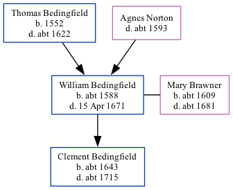

William Bedingfield c1588 - 1671
[ Home ] | [ Calendar ] | [ Surnames Index ] | [ Family History ]The child of Thomas Bedingfield and Agnes Norton, William Bedingfield, the 9 times great-grandfather of Nigel Horne, was born in Lyminge, Kent, England c. 1588 and married Mary Brawner (with whom he had 1 child, Clement) in Hinxhill, Kent, England on Apr 12, 16323.
He died on Apr 15, 1671 in Wootton, Kent1,2.
Parents
- Thomas was born in 1552
Children
- Clement was born c. 1643
Citations
- England, Select Deaths and Burials, 1538-1991 Ancestry.com Operations, Inc.
- Kent, England, Tyler Index to Parish Registers, 1538-1874 Online publication - Provo, UT, USA: Ancestry.com Operations, Inc., 2010. This collection was indexed by Ancestry World Archives Project contributors.Original data - Frank Watt Tyler. The Tyler Collection. Canterbury, Kent, England: The Institute of Herald
- Familysearch.org (www.familysearch.org)
Family Tree
Generated by Ged2Site. Last updated on Jul 20, 2025